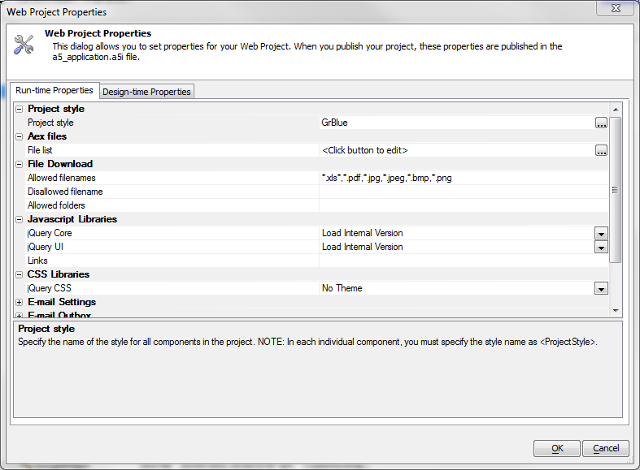
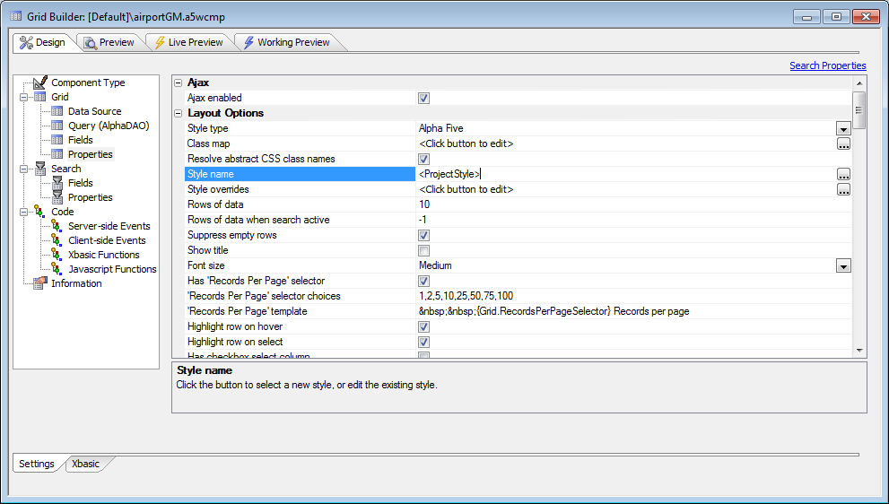
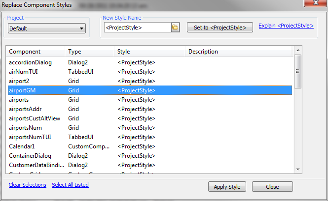

Project Style - Web Project Properties
In Version 11 projects, you can specify a style that will be used by default for all components in the project. This is set as a run-time property.
To use the default project style, set the style in your component to <ProjectStyle>.

You can change the component styles of the grids as a bulk operation, using the Edit|Bulk Operation|Global Replace of component styles dialog.

You can also set a component style to <session:varname>. For example, if you set the style of a component to <session:var1>, then at runtime if session.var1 is set to 'GrOlive', the component style will be set to 'GrOlive'. If the session variable does not exist, the style will be set to the <ProjectStyle>.
Video
This video shows how instead of hard coding the style used by each component in your project at Design Time, you can now set the style to <ProjectStyle>. The actual style to use is set in the Web's Project Properties dialog.Watch Video